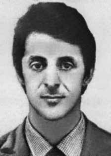

Ciro
Flávio
Salazar
de Oliveira
CIRCUNSTÂNCIAS DA MORTE
O Relatório Arroyo narra que, em 30 de setembro de 1972, Ciro Flávio Salazar Oliveira, acompanhado de Antônio Teodoro de Castro, Walkiria Afonso Costa, Manoel José Nurchis e João Carlos Haas Sobrinho, foi surpreendido pela presença de militares nas redondezas de seu acampamento.
Os documentos oficiais registram sua morte, mas divergem quanto à data. Certidão expedida pela Agência Brasileira de Inteligência (Abin), a pedido da Secretaria Especial dos Direitos Humanos da Presidência da República, indica sua morte em 1971, enquanto no relatório do Centro de Informações do Exército (CIE), de 1975, consta apenas a informação de que foi morto em 1972.
Já o relatório do Ministério do Exército, de 1993, especifica apenas a informação de que Ciro morreu em outubro de 1972. Segundo o Relatório da CEMDP, a ex-guerrilheira Criméia Alice Schmidt de Almeida confirma ter visto um slide com o cadáver de Ciro em abril de 1973, quando esteve presa no Pelotão de Investigações Criminais de Brasília (DF).
The Arroyo Report narrates that, on September 30, 1972, Ciro Flávio Salazar Oliveira, accompanied by Antônio Teodoro de Castro, Walkiria Afonso Costa, Manoel José Nurchis and João Carlos Haas Sobrinho, was surprised by the presence of military personnel in the vicinity of his camp.
Official documents record his death, but differ as to the date. A certificate issued by the Brazilian Intelligence Agency (Abin), at the request of the Special Secretariat for Human Rights of the Presidency of the Republic, indicates his death in 1971, while the report from the Army Information Center (CIE), from 1975, only contains information that he was killed in 1972.
The report from the Ministry of the Army, from 1993, only specifies the information that Ciro died in October 1972. According to the CEMDP Report, former Crimean guerrilla Alice Schmidt de Almeida confirms having seen a slide with Ciro's corpse in April 1973, when she was imprisoned in the Criminal Investigations Platoon of Brasília (DF).
El Informe Arroyo narra que, el 30 de septiembre de 1972, Ciro Flávio Salazar Oliveira, acompañado por Antônio Teodoro de Castro, Walkiria Afonso Costa, Manoel José Nurchis y João Carlos Haas Sobrinho, fue sorprendido por la presencia de militares en las inmediaciones de su campamento.
Los documentos oficiales registran su muerte, pero difieren en cuanto a la fecha. Un certificado emitido por la Agencia Brasileña de Inteligencia (Abin), a pedido de la Secretaría Especial de Derechos Humanos de la Presidencia de la República, indica su muerte en 1971, mientras que el informe del Centro de Información del Ejército (CIE), de 1975, sólo contiene información de que fue asesinado en 1972.
El informe del Ministerio del Ejército, de 1993, sólo especifica la información de que Ciro murió en octubre de 1972. Según el Informe del CEMDP, la ex guerrillera de Crimea Alice Schmidt de Almeida confirma haber visto un portaobjetos con el cadáver de Ciro en abril de 1973, cuando estaba encarcelada en el Pelotón de Investigaciones Criminales de Brasilia (DF).